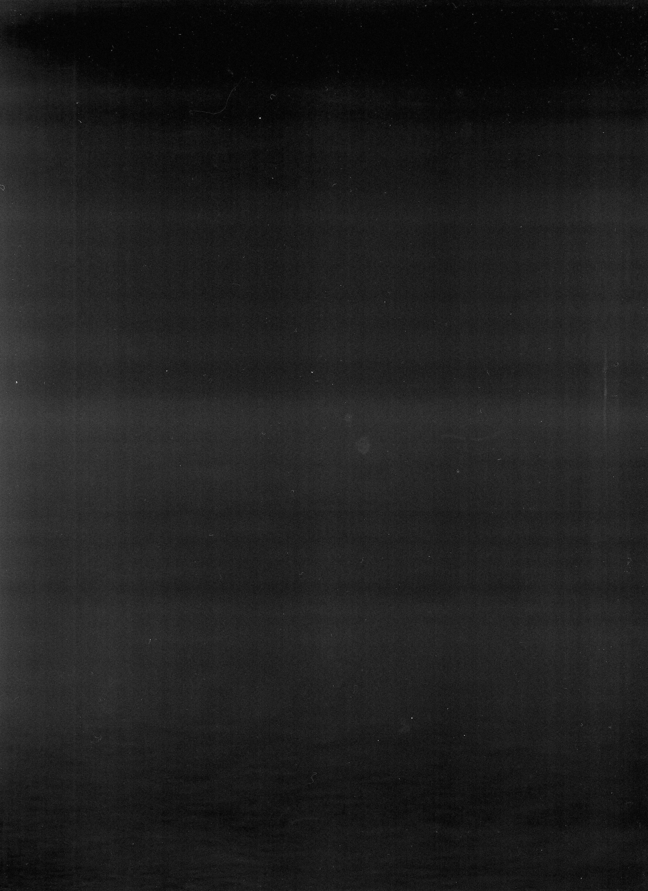

Home
Sound
Art
Video
About
Contact
IVAN CHEBOTAREV
IVAN CHEBOTAREV

жена моя. А я? моя песня. ведь это ж дочь твоя — В края. жена моя. А я? моя песня. ведь это ж дочь твоя — В края. жена моя. А я? моя песня. ведь это ж дочь твоя — В края. жена моя. А я? моя песня. ведь это ж дочь твоя — В края. жена моя. А я? моя песня. ведь это ж дочь твоя — В края. жена моя. А я? моя песня. ведь это ж дочь твоя — В края. жена моя. А я? моя песня. ведь это ж дочь твоя — В края. жена моя. А я? моя песня. ведь это ж дочь твоя — В края. жена моя. А я? моя песня. ведь это ж дочь твоя — В края. жена моя. А я? моя песня. ведь это ж дочь твоя — В края. жена моя. А я? моя песня. ведь это ж дочь твоя — В края. жена моя. А я? моя песня. ведь это ж дочь твоя — В края. жена моя. А я? моя песня. ведь это ж дочь твоя — В края. жена моя. А я? моя песня. ведь это ж дочь твоя — В края. жена моя. А я? моя песня. ведь это ж дочь твоя — В края. жена моя. А я? моя песня. ведь это ж дочь твоя — В края. жена моя. А я? моя песня. ведь это ж дочь твоя — В края. жена моя. А я? моя песня. ведь это ж дочь твоя — В края. жена моя. А я? моя песня. ведь это ж дочь твоя — В края. жена моя. А я? моя песня. ведь это ж дочь твоя — В края. жена моя. А я? моя песня. ведь это ж дочь твоя — В края. жена моя. А я? моя песня. ведь это ж дочь твоя — В края. жена моя. А я? моя песня. ведь это ж дочь твоя — В края. жена моя. А я? моя песня. ведь это ж дочь твоя — В края. жена моя. А я? моя песня. ведь это ж дочь твоя — В края. жена моя. А я? моя песня. ведь это ж дочь твоя — В края. жена моя. А я? моя песня. ведь это ж дочь твоя — В края. жена моя. А я? моя песня. ведь это ж дочь твоя — В края. жена моя. А я? моя песня. ведь это ж дочь твоя — В края. жена моя. А я? моя песня. ведь это ж дочь твоя — В края. жена моя. А я? моя песня. ведь это ж дочь твоя — В края. жена моя. А я? моя песня. ведь это ж дочь твоя — В края. жена моя. А я? моя песня. ведь это ж дочь твоя — В края. жена моя. А я? моя песня. ведь это ж дочь твоя — В края. жена моя. А я? моя песня. ведь это ж дочь твоя — В края. жена моя. А я? моя песня. ведь это ж дочь твоя — В края. жена моя. А я? моя песня. ведь это ж дочь твоя — В края. жена моя. А я? моя песня. ведь это ж дочь твоя — В края. жена моя. А я? моя песня. ведь это ж дочь твоя — В края. жена моя. А я? моя песня. ведь это ж дочь твоя — В края. жена моя. А я? моя песня. ведь это ж дочь твоя — В края. жена моя. А я? моя песня. ведь это ж дочь твоя — В края. жена моя. А я? моя песня. ведь это ж дочь твоя — В края. жена моя. А я? моя песня. ведь это ж дочь твоя — В края. жена моя. А я? моя песня. ведь это ж дочь твоя — В края. жена моя. А я? моя песня. ведь это ж дочь твоя — В края. жена моя. А я? моя песня. ведь это ж дочь твоя — В края. жена моя. А я? моя песня. ведь это ж дочь твоя — В края. жена моя. А я? моя песня. ведь это ж дочь твоя — В края. жена моя. А я? моя песня. ведь это ж дочь твоя — В края. жена моя. А я? моя песня. ведь это ж дочь твоя — В края. жена моя. А я? моя песня. ведь это ж дочь твоя — В края. жена моя. А я? моя песня. ведь это ж дочь твоя — В края. жена моя. А я? моя песня. ведь это ж дочь твоя — В края.